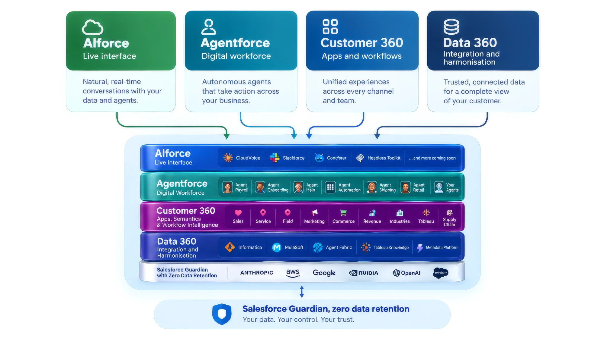

We work every layer of the stack, from the data underneath to the agents on top.
An agent is only as good as the data and the workflows beneath it. Enable builds across Data 360, Customer 360, Agentforce and AIforce, and we are honest about which layer your problem actually sits in.

Four layers. Most partners are strong at one of them.
Salesforce now sells a stack rather than a product, and the usual failure mode is a partner who is excellent at the layer they came from and vague about the rest. Enable is hands-on at all four. That matters most when the fix for an agent that keeps getting things wrong turns out to be a data model two layers down.
AIforce
Claudeforce, Slackforce, Coworker and the headless toolkit: where your people actually meet the platform. We design the surfaces the work happens in, rather than assuming everyone will log into Salesforce to do their job.
Agentforce
Piper, Casey, Fin, Carter and the agents you build yourself. We design, ground, guardrail and evaluate them against real cases. An agent nobody can supervise does not go to production, whatever the demo looked like.
Customer 360
Sales, Service, Field, Marketing, Commerce, Revenue, Industries and Tableau. The layer that still does most of the actual work, and the one that has to be right before an agent has anything reliable to act on.
Data 360
Integration, federation and harmonisation through MuleSoft, Informatica and Agent Fabric. Identity resolution, calculated insights and the semantics that make grounding work. Quietly, this is where most AI programmes come apart.
Business first. Salesforce second. Same at every stage.
The people you meet do the work
No bench of juniors, and no handover to someone you have never spoken to. Senior practitioners from the first call through to the handover.
We start with the business
Before we open Salesforce we want to know what you are trying to do and what has already been tried. Sometimes the answer is a build. Sometimes it is a small change. Sometimes it is that Salesforce is not the tool.
In the new capabilities since launch
Data 360, Agentforce and Agentforce Marketing have been part of our practice from the day each shipped, not added to the website when the demand turned up.
Scoped honestly, priced up front
Fixed scope, fixed price and fixed date wherever the work allows it. No padded hours, no surprise invoices, and nothing on the bill you cannot point to.
We tell you what you need to hear
We would rather have a useful conversation than win a project that should not have happened. That goes for scope, for timing, and for whether the platform fits at all.
No lock-in
No lock-in contracts, non-competes or minimum terms. Even Waypoint, our continuous improvement programme, runs month to month. If we are delivering, the contract will not be the reason you stay.
Where Salesforce stops, these three carry on.
We implement products rather than resell them, and we only take on ones we would put into our own org. Each is native to Salesforce, so nothing here adds a second system to keep in sync.
Website, eCommerce and point of sale, inside Salesforce.
One catalogue and one customer record across web, counter and CRM, with no connector in between.
Learn moreAgreements that never leave Salesforce.
Documents generated from your records, signed without an account, and filed back automatically. Built in Christchurch.
Learn moreThe reason your team stops exporting to Excel.
Thirty-two Lightning components: real inline editing, grids, calendars, kanban and maps on the records you already have.
Learn moreThree ways in, none of them a twelve-month commitment
Start with a build
Fixed scope, fixed price, fixed date. Three to four weeks each, and each one becomes the first entry on your Waypoint backlog rather than a project that simply ends. Larger programmes run the same way, phase by phase.
Keep improving with Waypoint
A standing programme of review, prioritisation and build. Every quarter we look at what the platform is actually doing, you decide what is worth changing, and we change it. Month to month, no minimum term.
Training and enablement
Adoption is a people problem, not a licensing one. The measure of a good course is that you stop needing us for routine work.
Let's talk about your business first.
Tell us what you are trying to do. We will tell you which layer of the stack it lives in, what it would take, and whether it is worth doing at all.
Blair Rooney, Managing Director. blair@enabledigital.co, +64 22 226 4252. Auckland and Wellington, working across New Zealand and Australia.